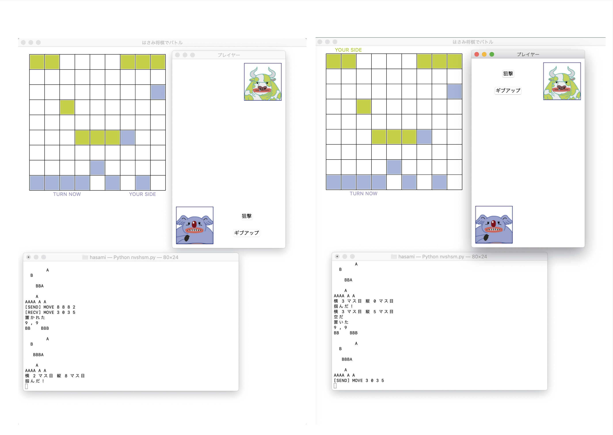
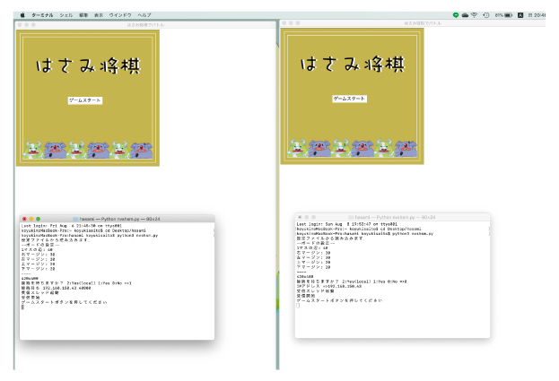
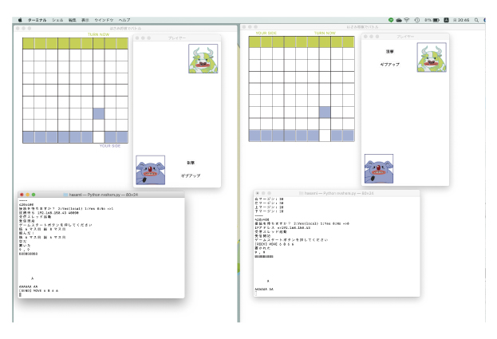
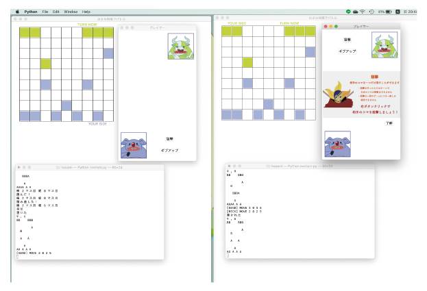
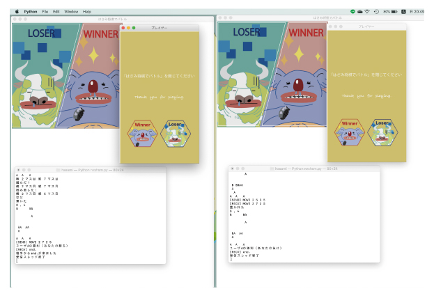
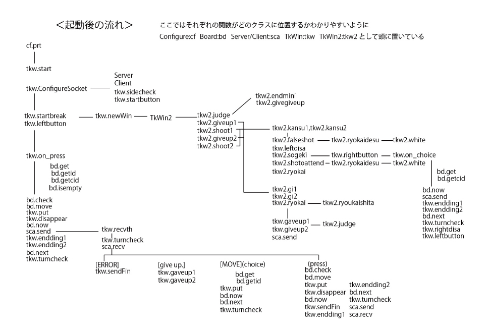

WebSocketを用いた対戦型はさみ将棋です。
◴ 2020/6/4-2020/8/27
✎ Python Illustrator
Rule

クライアントとサーバーを決め、2人のプレイヤーでゲームを開始します。

一方が駒を動かすともう一方の駒も反映して同じように動きます。 また、すでに駒が置いてあるマスには駒は置けず、駒を飛び越えて移動することもできません。 1ターンごとに順番は交代します。

対戦中自分の持ち駒が相手の持ち駒より少ない場合、一度だけ自分のターンで相手の駒を一つ選び狙撃することができます。

相手の持ち駒を自分の持ち駒で挟んで消し4個以下にすると勝利です。 または、自分からギブアップすることもできます。

関数sendを使って情報msgを送信→関数recvthで解読
「end.」が送られると関数sendFinに進み、ボード画面はエンディングに切り替わります。
それと同時にプレイヤー画面にカーソルが入るとエンディングに切り替わる設定になります。